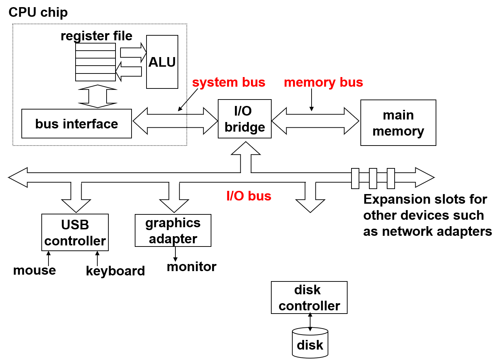
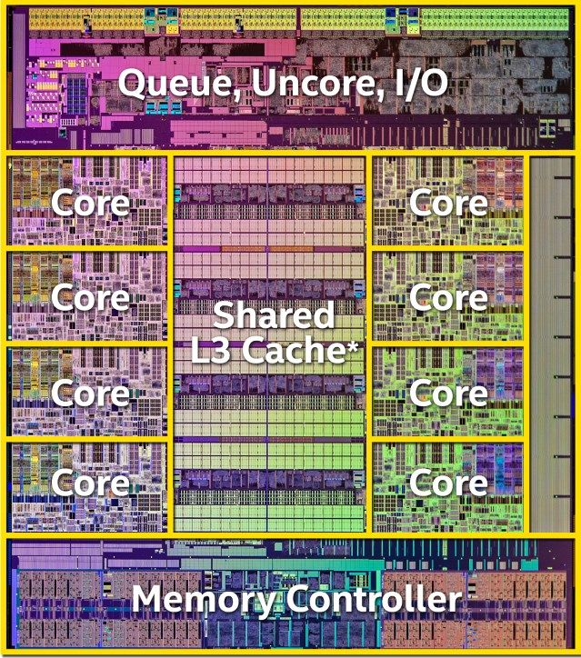
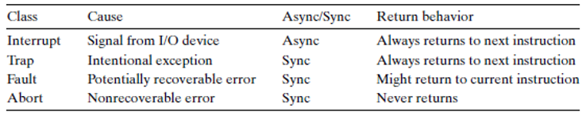

Reference: comptuer system: a programmer’s perspective
Related course: Introduction to computer systems
Memory hierarchy
memory = RAM + ROM + Hard Disk
RAM
RAM = DRAM + SRAM
RAM is volatile memories -> loss data if powered off
| category | transistor per bit | access time | persist | sensitive | cost | applications |
|---|---|---|---|---|---|---|
| SRAM | 6 | fastest | yes | no | expensive | cache |
| DRAM | 1 | fast | no | yes | less exp | main memories |
ROM
ROM is nonvolatile memories
ROM:BIOS, graphics card, disk controllers
Hard disk = several platters
platter = 2 surfaces
surface = multiple tracks
track = lots of sectors
Access time = seek time (seek for track) + rotation time (wait for sector) + transfer time (data transfer)
Example: T = 9ms + 4ms + 0.02ms -> seek time and rotation time dominate the access time.
I/O port: address reserved for the communication between cpu and I/O device.
Routine for cpu access disk:
- cpu initiates a disk read by writing a command, logical block number and destination memory address to a port
- Disk controller reads sector and perform a DMA (no CPU) transfer into main memory(RAM).
- Disk controller send interrupt to cpu. (could be singal in pin or information on bus).
- CPU read from memory.

SSD
SSD stands for Solid State Disk. It is a storage technology based on flash memory.
Charasteristic of SSD:
- Data read/write in units of pages(pages form block)
- Page can be written only after the blocks are erased.
- Could be wears out.
- No moving part->faster, less power.
The gap between the speed of CPU and memory is widthen. We use locality and memory hierarchy to decrease the time of memory process.
Locality: Pragrams tend to use data and instructions with address near or equal to those they have used recently.
Temporal locality: recently used.
Spatial locality: nearby.
->Main memory(DRAM)->Local disks.
Low level memory serves as caches for high level memory.
Because of the locality, hierarchy memory could be a good solution for fasten the progress on memory.
Generic Cache memory organization:
cache = sets = valid(1bit) + tag(block index in physical memory) + blocks
physical address = tag(block index) + set index + block offset
physical address -> cache:
select set -> Line matching(valid number, tag) -> word extraction(according to block offset)
Read
conflict->same cache lines will be filled by different physical address multiple times.
Why using middle bits as index? the middle bits will make the physical memory caches mapping more fluent. Consecutive memory lines map to different caches lines.
To find the lines in same set. Using tags.
The physical memory will only determine which sets will be used. If all the lines in the same sets are filled, which line will be evicted?
LFU: least frequently used.
LRU: least recently used.
Set associative caches: several sets. each set contains several lines.
Fully associative caches: one sets. contain all the lines.
Write
Modern Implementation: write back, write allocate
write through: cpu write into caches and copy data from caches into memory.
write back: cpu write into caches, copy data into memory only if the caches will be evicted.
write allocate: land the corrend memory block into cache, then updates the cache block.
no-write-allocate: bypass the cache and write toe word directly memory.
Miss rate: memory not found in cache. 3-10% for L1. can be small for L2.
Hit rate: fraction of memory found in cache(1-Miss rage).
Hit time: time to deliver a line in the cache to processor.
Miss Penalty: additional time required because of a miss.
How to write cache-frendly code? better locality. lower miss rates.
Temporal locality: repeated references to local variables->compiler will cache the data in register.
Spatial locality: stride-1 references patterns->contiguous blocks will be stored in caches.

Linking
Linking can be performed 1. at compile time(static linking). 2. at load time(load time dynamic linking). 3. at run time(run-time dynamic link).
compiling: preprocessor(cpp), compiler(cc1), assembler(as), linker(ld).
Static Linking
relocatable object files(*.o) -> Fully linked executable object
Esternal reference: reference to a symbol defined in another object file. (values close to 0).
Symbol resolution: resolved external references.
Dynamic linking
DLL/so files that will be load at run time or load time. For load time dynamic linking, there is a stub in the binary code that tell the system to load some resource from the shared library. Only after the resource is loaded, the program will start to run.
Run-time dynamic linking do not ask system to load resource at load time. In windows, GetProcAddress API will load the library at run time.
Executable and linkable format
standard binary format for object files. Unified format for relocatable object(.o), executable object files and shared object files(.so).
Command in GCC
Create dynamic library in GCC:
1 | gcc -shared hello.c -o libhello.so |
Link libhello.so to executable:
-l link library. -L library position.
1 | gcc test.c -lhello -L. |
create static library in GCC:
1 | gcc -c hello.c -o libhello.o |
Link libhello.o to executable:
1 | gcc test.c libhello.o |
Operating system
Abstractions provided by OS
classes of exceptions
synchronous exceptions
caused by events as the result of executing an instruction.
traps
intentional. returns control to next instruction. (breakpoint)
faults
unintentional but possibly recoverable. page faults.
page fault: the memory address requested is not available.
case 1: the address is invalid -> segmentation fault(SIGSEG).
case 2(minor): the page is loaded in memory but it is not marked in memory management unit -> register in MMU.
case 3(major): the page is not loaded -> load page from disk.
For case 1, the OS will send SIGSEG to the process and terminate the process. Thus unrecoverable.
For case2, case 3, the OS will do the corresponding handle and return the instructions points. Thus the instruction will do again.
aborts
unintentional and unrecoverable. parity error.
Asynchronous exceptions
caused by events external to the processor.
Examples: 1. IO interrupts(ctrl-c). 2. hard reset interrupt(reset button). 3. soft reset interrupt(ctrl-alt-delete).

process
scheduler(parts of kernel) will do following things.
- decides whether to preempt the current process
- selects a previously preempted process
- preempts the current process
- restart the scheduled process
In order to restart the preempted process, context need to be stored.
context contains:
- cpu (register, value, status)
- kernel (environment valiables, process table, page table, file table)
- memory (user’s stack, kernel’s stack, code, data)
context switch:
- system call(read, sleep)
- timer interrupt (scheduler)
| process status | action |
|---|---|
| stop | receiving a signal(SIGSTOP, SIGTSTP, SITTTIN, SIGTTOU) |
| running | receiving a SIGCONT |
| terminated | exit(), return from main, signal |
fork(void): return 0 to child, PID to parent, -1 for error.
clone all the data in parent process except pid.
two process can share files for communicate. (stdout)
Zombie
A terminated child process will become zombie if the parent has not reaped.
If the parent process has be terminated, kernel will assign init (pid=1) to reap them.
Zombie will consume system memory resources -> always reap zombies.
Process related API
pid_t waitpid(pid_t pid, int *status, int options);
pid_t wait(int *status);
if pid > 0, the process will wait for specific child.
if pid = -1, the process will wait any child.
if there is no children, return -1. errno=ECHILD(the process has no child), errno=(EINTR)interrupted by a signal.
options = 0.
unsigned int sleep(unsigned int secs);
int pause(void);
int execve(const char* filename, const char* argv[], const char* envp[]);
if something wrong, return -1. otherwise, never return.
The new program will use the same process resource. The running stack will be replaced.
unix shell
application level program.
compare: kernel is the core of OS whoes jobs are managing the hardware resource.
variants of shell: bash, sh, csh, tcsh.
performs a sequence of read/evaluate steps and terminate. read: reads a command line. evalute: parse the command line and runs programs.
IO
System-level I/O (UNIX IO)
In Unix, all IO devices are modeled as files.
A socket is a file that is used to communicate with another process across a network. (other types include named pips, symbolic links, character and block devices)
Kernal data structure for files
Descriptor table: every process has one. index is descriptor, point to file table.
File table: opened file has one or more, shared by all process. file position, reference count, pointer to V-node table.
V-node table: every file has one, shared by all process. file type, file size, file access.
Normally, one descriptor in descriptor table corresponding to one file table(different descriptor corresponding to same file will not conflect).
However, dup2(fd1, fd2) will assign file table(fd1) to file table(fd2).
File table will be deleted by kernel if recerence count is zero.
Open files
Appication: announce intention to access an I/O device. However, the application will only keep track of descriptor. it can set the current file position explicitly by performing a seek operation.
Kernal: open the file, returns a small non-negative integer descriptor. keeps track of all information about the open file.
EOF: there is no EOF in files. It is just a condition triggered if the requested byte is more than bytes left to the end.
Close files:
application: will not access the file.
kernel: frees structures. restore the descriptor to a pool of available descriptor.
RIO (Robust IO)
wrappers that provide efficient and robust IO.
with no buff: read/write automatic deal with EINTR. EOF will return size instead of 0.
buff: read/write to buff. less read/write command->better performance.
rio_readn(int fd, void *usrbuf, size_t count)
rio_writen(int fd, void *usrbuf, size_t count)
standard IO
C standard library (libc.so). high level standard io.
abstract open files as streams -> file descriptor and a buffer.
stdin(fd=0)
stdout(fd=1)
stderr(fd=2)
Similar to RIO.
|Unix IO|standard io—–|——-|———–
prons|general, lowest over head. Metadata, async-signal-safe|efficiency. automatically short counts
cons |Shord counts is tricky and error prone. inefficient |no metadata. not async-signal-safe. not good for network sockets
note: standard IO require fflush/fseek/fsetpos/rewind between write and read.